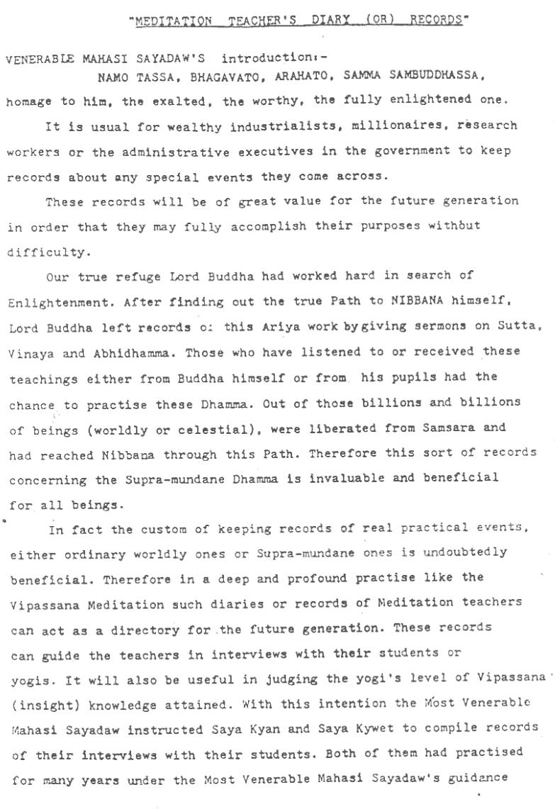

Meditation Teacher’s Diary (or) Records¶
by Mahasi Sayadaw, Saya Kyan, Saya Kywet
Note
This file was build on Dec 20, 2023, rev. 0.1-work-in-progress / git 54b95a1 of the source.
Electronic edition notice
This book was digitized from typewritten edition which I got hold of by curious ways of events. I was told that it had been translated from Burmese original published in print in the 1960’s (?). If someone knows more, I will gladly complete this notice — please contact me.
Sectioning hierarchy was sometimes somewhat ambiguous. In some cases ending of a comment was ambiguous. Obvious minor mistakes (such as a word repeated twice) in typing were corrected. Archaic spelling and pali transcription were left as-is. Tags like [:12:] denote pages of the original.
{kind=link}

Contents¶
- 1. Venerable Mahasi Sayadaw’s introduction
- 2. Introduction
- 3. Nama-rupa pariccheda nana
- 4. Paccaya pariggaha nana
- 5. Sammasana nana
- 6. Udayabbaya nana
- 6.1. Nana
- 6.2. Discovering about the noting and knowing mind
- 6.3. Obhasa uppakilasa
- 6.4. Piti (joy)
- 6.5. Passadhi (tranquility)
- 6.6. Sukha
- 6.7. Addhimokkha saddha (determined faith)
- 6.8. Paggama viriya (ascending, increasing effort)
- 6.9. Uppekkha (equanimity)
- 6.10. Nikanti
- 6.11. Ten Uppakilasas
- 6.12. How to lecture
- 6.13. Summary
- 7. Bhanga nana
- 8. Bhaya nana
- 9. Adinava nana
- 10. Nibida nana
- 11. Muncitu kamyata nana
- 12. Patisankha nana
- 13. Sankha rupekkha nana
- 14. Anuloma nana
- 15. Gotrabhu nana
- 16. Magga nana
- 17. Phala nana
- 18. Ariya bhumi
- 19. Special note